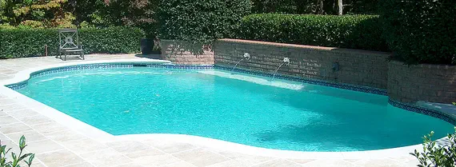
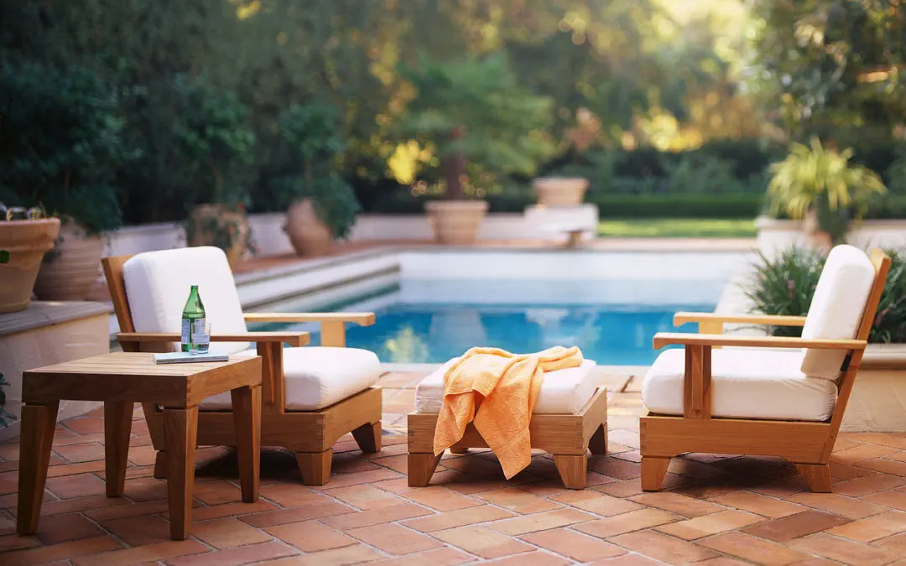

O-Rings... There are many items worth checking through out the season. Simple checks are as common as making sure the pump lid o-ring is properly lubricated. Products like Jack's Lube or Magic...

My pool has a bathtub ring... Floating oils, dirt & waste can combine to form a scum line around the pool; this is why tile, an easily cleanable surface, is placed at water level around the...

Opening your swimming pool for the spring can be a lot of work to do on your own. You can often save money by doing some of the work yourself, i.e. removing the cover, or vacuuming the pool. Here is...